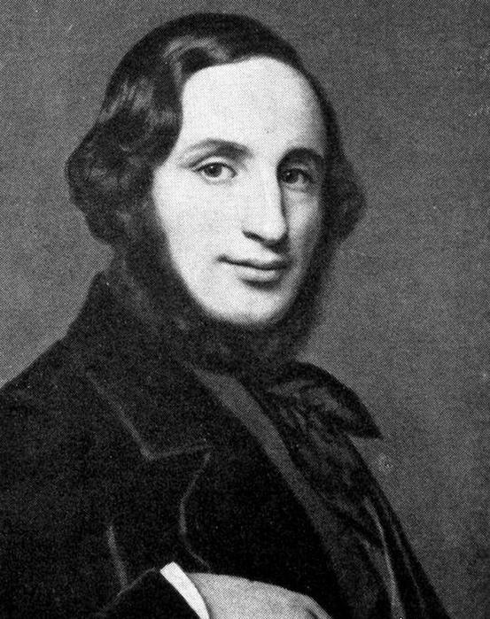
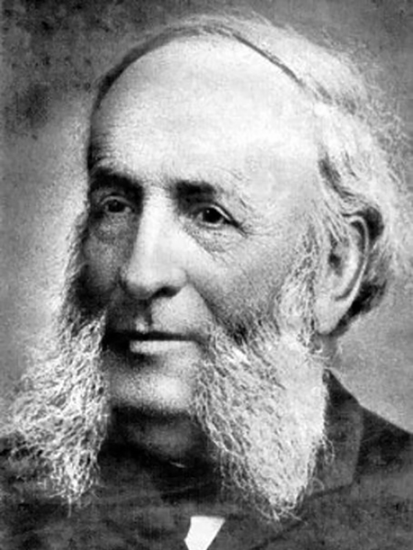
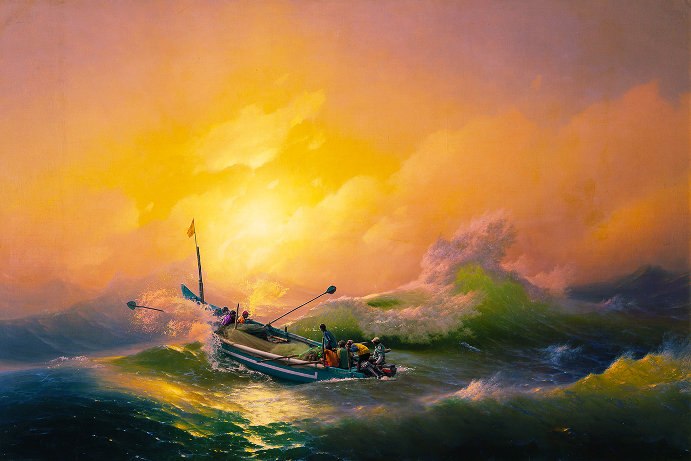
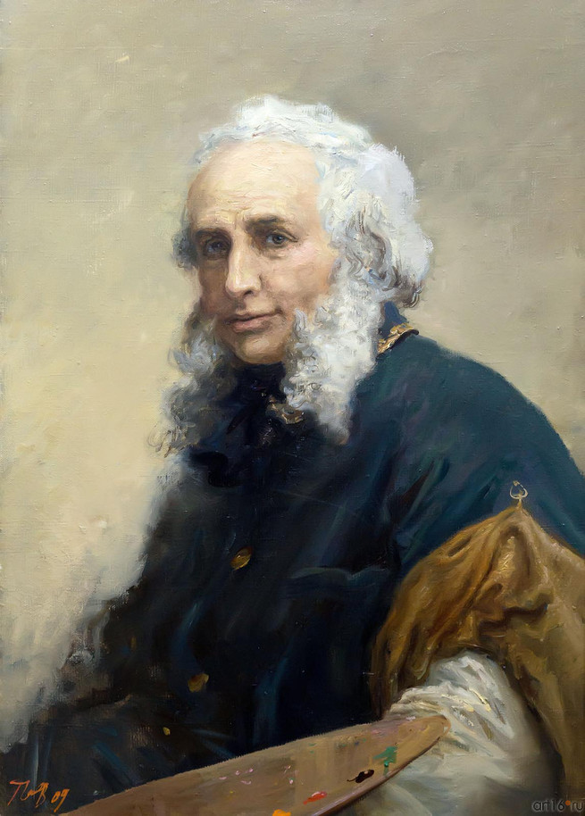

Иван Константинович Айвазовский (1817 – 1900) – великий русский художник армянского происхождения. Он был меценатом, а также почетным членом римской, парижской и амтердамской Академий художеств.

Родился Иван Константинович 17 (29) июля 1817 г. в Феодосии. Ещё в детстве у Ивана были выявлены способности к музыке и рисованию. Первые уроки художественного мастерства были даны ему известным феодосийским архитектором, Я.Х.Кохом.
ДЕТСТВО И ЮНОСТЬ
Родился Иван Константинович 17 (29) июля 1817 г. в Феодосии. Ещё в детстве у Ивана были выявлены способности к музыке и рисованию. Первые уроки художественного мастерства были даны ему известным феодосийским архитектором, Я.Х.Кохом.
Став выпускником училища, Айвазовский поступил в симферопольскую гимназию. После ее окончания, по протекции феодосийского градоначальника, А.И.Казначеева, будущего художника зачислили в столичную Императорскую Академию художеств.

ДАЛЬНЕЙШЕЕ ОБУЧЕНИЕ
В августе 1833 г. Айвазовский прибыл в Санкт-Петербург. Он учился у таких мастеров, как М.Воробьев, Ф.Таннер, А.И. Зауервейд. Его картины, написанные во время обучения, были удостоены серебряной медали. Айвазовский был настолько одаренным студентом, что его выпустили из Академии на 2 года раньше срока. Для самостоятельного творчества Ивана Константиновича отправили сперва в родной Крым, а потом в заграничную командировку на 6 лет.

КРЫМСКО-ЕВРОПЕЙСКИЙ ПЕРИОД
Весной 1838 г. Айвазовский уехал в Крым. Там он создавал морские пейзажи, занимался батальной живописью. В Крыму он пробыл 2 года. Затем вместе с В.Штернбергом, своим товарищем по пейзажному классу, художник отправился в Рим. По дороге они посетили Флоренцию и Венецию, где состоялось знакомство Айвазовского с Н.Гоголем.

ПРИЗНАНИЕ ТАЛАНТА
1844 г. был знаковым для художника. Он стал главным живописцем российского Главного морского штаба. Через 3 года ему присвоили звание профессора Академии художеств Санкт-Петербурга. Для детей, интересующихся жизнью великого художника, важно знать, что главными его работами являются картины “Девятый вал” и “Черное море”.
Но сражениями и морскими пейзажами его творчество не ограничивалось. Он создал серию крымских и украинских пейзажей, написал несколько исторических полотен. Всего за свою жизнь Айвазовский написал более 6000 полотен.

ИНТЕРЕСНЫЕ ФАКТЫ
Изучая краткую биографию Ивана Айвазовского, следует знать некоторые интересные факты из его жизни.
Настоящее имя художника – Ованес Айвазян. Отец будущего мастера, Константин (Геворг), армянин по происхождению, после переезда в Феодосию писал фамилию на польский манер: «Гайвазовский»
Великий художник, которому повезло быт признанными при жизни, знавал нужду. Однажды ему заплатили за работу не деньгами, а колбасой.
Заработанные деньги Иван Константинович тратил не только на свою семью, но и на родной город. На его средства в Феодосии была построена галерея, школа и музей. Также художник способствовал прокладке железнодорожного пути в Джанкой.